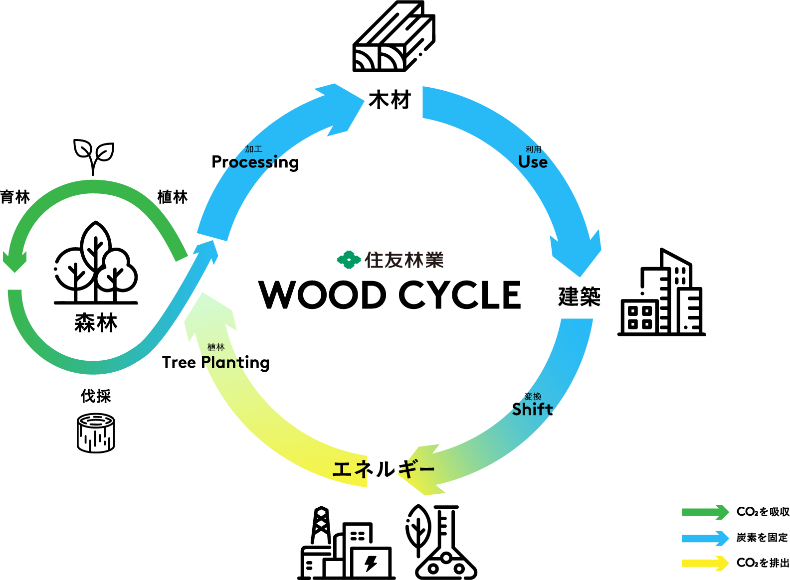

木の内装と、やわらかな光。
住友林業が紹介する寝室の比較研究では、「木質内装＋間接照明」の部屋で、「白色クロス＋直接照明」の部屋よりも、主観的な熟眠感が高まる傾向などが見られました。
一方、睡眠計による睡眠時間や睡眠効率などには、条件間の有意差はありませんでした。木だけの効果と断定せず、照明も含めた空間づくりとして考えることが大切です。
研究の詳細：筑波研究所「木＋間接照明が眠りの質を高める！」
KIKORIN ROOM GUIDE
住友林業の取り組みと、木質空間の効果。
住友林業は、森林の管理から木材の加工・流通、木造建築、再生可能エネルギーまで、木を軸にした事業を展開しています。
このつながりがWOOD CYCLEです。森林でCO₂を吸収し、木材や建物に炭素を蓄え、資源を循環させることで、脱炭素社会への貢献を目指しています。
国産材の活用や中大規模建築の木造化にも取り組み、木の使い道を広げています。

住友林業が紹介する寝室の比較研究では、「木質内装＋間接照明」の部屋で、「白色クロス＋直接照明」の部屋よりも、主観的な熟眠感が高まる傾向などが見られました。
一方、睡眠計による睡眠時間や睡眠効率などには、条件間の有意差はありませんでした。木だけの効果と断定せず、照明も含めた空間づくりとして考えることが大切です。
研究の詳細：筑波研究所「木＋間接照明が眠りの質を高める！」
健康な成人20名を対象とした実験では、スギやヒノキの香りを嗅いでいる間、コンクリートや香りを提示しない条件に比べ、交感神経活動の指標が低下する傾向が見られました。
木の香りが落ち着きにつながる可能性を示す研究です。樹種や仕上げによって香りは異なるため、素材を選ぶ際には見た目とともに確かめてみてください。
掲載した内容は各研究の条件で得られた結果です。この客室で同じ効果を検証したものではなく、感じ方や効果には個人差があります。
濃い茶色の木目。
明るい色と、はっきりした木目。
淡く明るい色の木肌。
樹種名は客室の設計上の設定です。プレミアムの壁では左からウォルナット・オーク・ヒノキを展示します。客室タイプによってサンプルの配置は異なります。